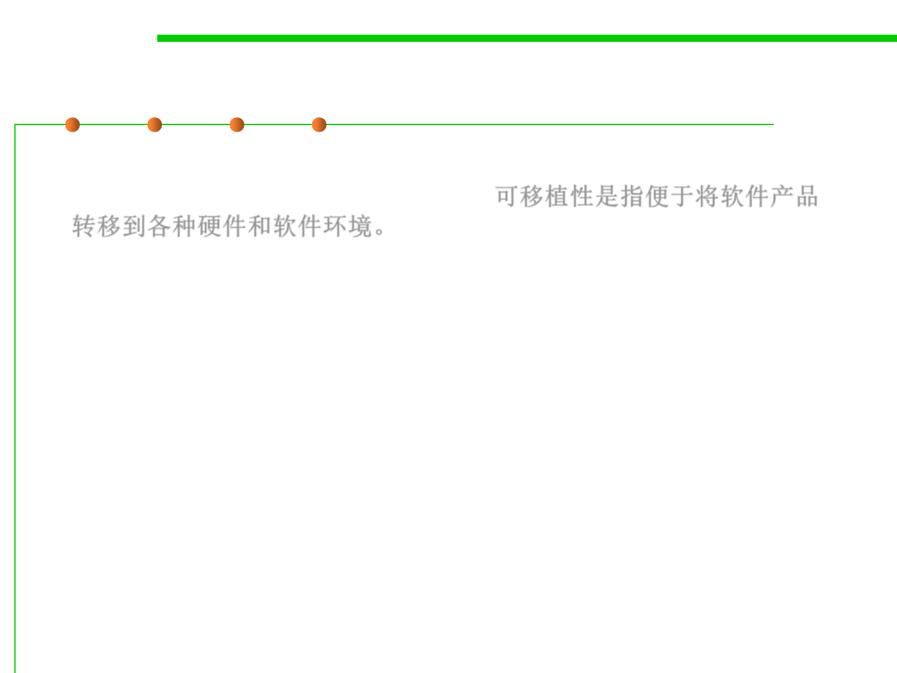

1.2 Quality Objectives of Software Construction
External 7: Portability (可移植性)
▪ Portability is the ease of transferring software products to various
hardware and software environments.可移植性是指便于将软件产品
转移到各种硬件和软件环境。
▪ Portability addresses variations not just of the physical hardware but
more generally of the hardware-software machine, the one that we
really program, which includes the operating system, the window
system if applicable, and other fundamental tools.